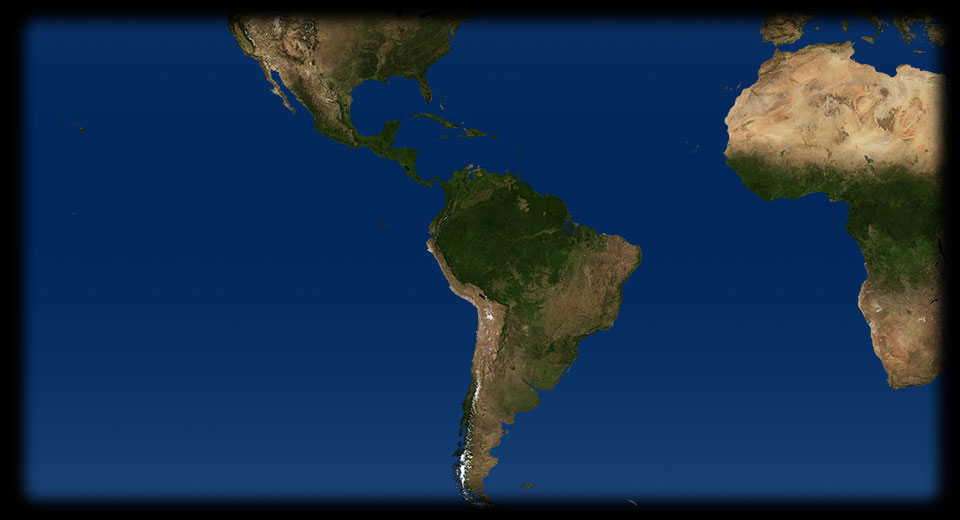
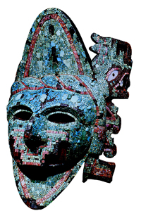

- 90 390
- 110 370
- 65 330
- 70 290
- 115 340
- 40 310
- 93 310
- 140 390
- 275 485
- 375 475
- 245 445
- 225 475
- 200 445
- 30 270
MESSICO
La giovane nativa Malinalli, ribatezzata dagli spagnoli La Malinche o Doña Marina fa parte del bottino di guerra di Hernàn Cortés. Ne diventa amante e da lui ha un figlio; ma soprattutto, come si vede da questa miniatura tardocinquecentesca della Historia de las Indias del gesuita Diego Duràn, ne è l’interprete e traduttrice presso Montezuma e i sacerdoti, dischiudendo ai conquistatori il mondo della civiltà azteca.TEOTIHUACAN
La “città santa” di Teotihuacán raggiunge il suo massimo splendore tra il III e il VII secolo dopo Cristo, arrivando a contare circa 180.000 abitanti. Qui vediamo la Piramide del Sole, che insieme a quella della Luna e al tempio di Quetzalcoatl è il più importante edificio del centro religioso: per dimensioni è paragonabile alla Piramide di Cheope in Egitto.
MICHOACAN
Questa copia del Lienzo de Tlaxcala, un codice azteco perduto realizzato intorno al 1550, ci mostra la battaglia di Michoacan, avvenuta nel 1522: gli indigeni tlaxcala erano alleati con gli spagnoli contro gli aztechi.
MESSICO
Il cosiddetto Codex Mendoza (dal nome del viceré che lo commissionò), conservato a Oxford, è destinato all’imperatore Carlo V; dipinto intorno al 1542 da pittori indigeni, esso fornisce un’accurata e spettacolare descrizione per immagini della civiltà azteca. In questa pagina vediamo i sei livelli di iniziazione necessari ai giovani per diventare sacerdoti-guerrieri.- 
MESSICO
Durante le cerimonie religiose gli aztechi indossano maschere rituali come questa, che rappresenta Quetzalcoatl, realizzata tra XV e XVI secolo in legno ricoperto da un mosaico di pietre dure e conchiglie. MESSICO
Calendario e testo religioso allo stesso tempo, il Codex Laud, scoperto dall’arcivescovo inglese William Laud, è uno straordinario documento probabilmente di origine olmeca, databile a prima dell’impresa di Colombo; in questa pagina vediamo una raffigurazione simbolica del Sole, al centro, un’aquila che vi si tuffa e, in basso, la Morte intenta a compiere un sacrificio umano.MESSICO
La Piedra del Sol viene scolpita poco prima della scoperta dell’America con strumenti di selce in un unico monolito di basalto dal diametro di 3,60 metri. Essa è insieme un complesso calendario che tiene conto di tre differenti computi del tempo e una raffigurazione della cosmologia e del pantheon degli aztechi.CHICHEN ITZA
Uno dei più importanti monumenti della civiltà maya, il tempio di Kuculcán (nome maya del dio Quetzalcoatl) è costruito tra il XI e il XIII secolo; l’altezza della piramide a gradoni sulla quale sorge l’edificio sacro è di 24 metri. L’Impero maya, esteso tra Yucatàn, Guatemala e Honduras era organizzato in una federazione di città-stato autonome.MACHU PICCHU
Costruita nel XV secolo come sede dei sovrani ma già abbandonata dal potere regale al tempo dell’arrivo degli spagnoli, che dunque non vi mettono piede, la città inca di Machu Picchu è portata all’attenzione del mondo solo nel 1911 dallo storico americano Hiram Bingham.ANDE ARGENTINE
La pratica dei sacrifici di bambini nelle culture mesoamericane rimane avvolta dal mistero: questa statuetta femminile fa parte del corredo funerario rinvenuto insieme a tre piccole mummie di vittime sacrificali in un santuario inca sulle Ande argentine.INCA
Il giaguaro è per le culture mesoamericane una delle personificazioni del Sole; la sua immagine si ritrova spesso anche nelle arti minori, come testimonia questo vaso inca dai manici che ne riproducono la figura e il caratteristico manto a macchie.CUZCO
Nel 1533 Atahualpa, l’ultimo sovrano inca, viene imprigionato nel Tempio del Sole di Cuzco e poi ucciso da Francisco Pizarro, nonostante quest’ultimo abbia promesso di liberarlo dietro il pagamento di un ricchissimo riscatto in oro. L’inca e lo spagnolo sono qui raffigurati dalla penna di Felipe Guaman Poma de Ayala, un indigeno che, all’inizio del Seicento, ha redatto in spagnolo e illustrato con disegni una storia dell’Impero inca e della conquista spagnola oggi conservata a Copenaghen.CUZCO
Cuzco era la capitale dell’Impero inca. Durante la seconda metà del 1500 gran parte degli indigeni vengono decimati dalle malattie portate dagli europei: su di loro si abbattono vere e proprie epidemie di vaiolo, di morbillo, di influenza. Si calcola che in Perù la popolazione indigena sia passata da 9 milioni di abitanti nel 1533 a poco più di 500.000 all’inizio del 1600.CITTA' DEL MESSICO
Tenochtitlàn (oggi Città del Messico) era la capitale dell’Impero azteco. Tra il 1519 e il 1625 la popolazione indigena messicana è passata da 25 milioni a 1 milione. Causa principale di morte furono le malattie.